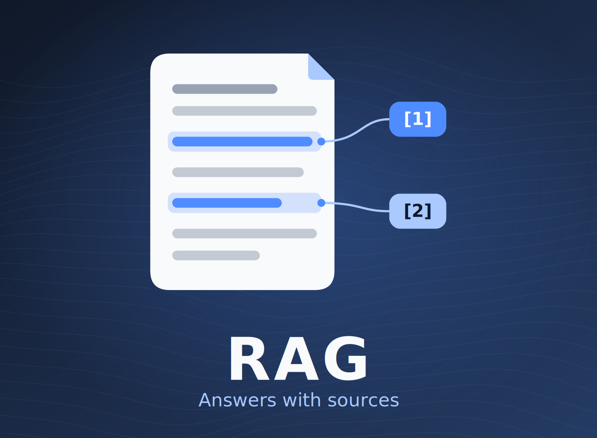

RAG AI Assistant
An AI document assistant that finds answers in your own files and shows where they came from.

Overview
A complete Retrieval-Augmented Generation pipeline, from document ingestion to semantic search. Documents in Google Drive are picked up automatically, prepared and made searchable. Questions get answers grounded in those documents, with sources cited.
Problem and objectives
The goal: let people ask questions of their own documents and get answers they can check against the source.
- Ingest documents automatically by monitoring Google Drive.
- Keep inference private by running models locally.
- Return context-aware answers with source citations.
- Make deployment portable and self-hosted, so it can extend to enterprise knowledge bases and support assistants.
My role
I designed and shipped the whole pipeline: the automated ingestion workflow, chunking, embeddings and storage, the local model setup, semantic search with cited answers, and the Docker packaging.
Architecture and tools
Two paths share one vector store. Ingestion turns files into searchable vectors. Querying finds the closest passages and hands them to a local model.
Ingestion
- An n8n workflow monitors Google Drive for documents.
- Documents are split into chunks.
- Embeddings are generated with nomic-embed-text through Ollama.
- Vectors are stored in Supabase pgvector.
Query
- The question is matched against stored vectors by semantic search.
- Llama 3.2, hosted locally with Ollama, writes the answer.
- The answer cites the sources it used.
- n8n
- Ollama
- Supabase pgvector
- Docker
- Llama 3.2
- nomic-embed-text
Visuals
Key decisions
- Local models. Ollama keeps inference private and self-contained.
- Citations in every answer. Answers are only useful if you can check them.
- Docker. One portable package that can be self-hosted.
Links
No public demo or repository is linked yet.